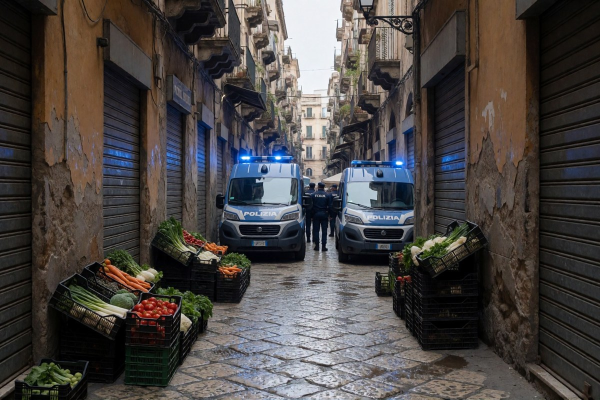

Sicilia · 13 novembre 2026
Dopo il funerale che ha fermato Ballarò, a Palermo arriva la polizia

Centinaia di agenti hanno perquisito magazzini, negozi e abitazioni a Ballarò e alla Guadagna, quattro giorni dopo il corteo funebre di Emanuele Rubino. Due consiglieri di circoscrizione contestano: «Ci aspettavamo assistenti sociali».
di Franco Zanghì
Venerdì 13 novembre, in mattinata, centinaia di agenti hanno passato al setaccio i quartieri di Ballarò e della Guadagna, a Palermo, perquisendo magazzini, attività commerciali e abitazioni. Lo scrive l'ANSA. Il blitz è arrivato pochi giorni dopo il corteo funebre di Emanuele Rubino.
Ballarò è il mercato più antico della città, nel centro storico; la Guadagna è un quartiere popolare poco più a sud.
Da dove nasce l'operazione
Emanuele Rubino, 36 anni, è morto mentre era agli arresti domiciliari. Era stato condannato in primo grado per tentato omicidio. Lunedì 9 novembre il suo feretro è stato portato in corteo anche lungo la centralissima via Maqueda, tra petardi e decine di scooter al seguito. Il Comune di Palermo ha fatto sapere che la polizia municipale, ai Quattro Canti, aveva impedito al corteo di proseguire in quella direzione.
Il bilancio
Secondo l'ANSA gli agenti hanno sequestrato modeste quantità di droga e numerose scatole di fuochi d'artificio. Il giorno dopo, il 14 novembre, Sbircia la Notizia ha scritto che il materiale pirotecnico trovato in un deposito condominiale supera i 100 chili, e ha riferito di 5 persone denunciate e di un ventenne arrestato in via Mongitore, accusato di non essersi fermato all'alt, di aver investito un agente e di detenzione di droga a fini di spaccio: il poliziotto è stato medicato per lesioni non gravi. Sono numeri di una fonte sola, e vanno presi per quello che sono.
La contestazione
L'operazione non è piaciuta a tutti. Massimo Castiglia e Fabrizio Brancato, consiglieri della prima circoscrizione, l'hanno contestata: «Ci aspettavamo un esercito di assistenti sociali, psicologi ed educatori. E invece, ancora una volta, vediamo arrivare squadre di forze dell'ordine». Una presenza, aggiungono, «certamente benvenuta e necessaria», ma che da sola non costruisce il passo successivo, «quello della prevenzione, delle opportunità e del riscatto sociale». Perché, dicono, «è molto più facile mandare le pattuglie» che «cambiare davvero le condizioni di vita di un quartiere».
Resta la domanda che quella frase porta con sé: basta un blitz, qualche giorno dopo, per riprendersi un quartiere? O serve anche qualcuno che ci resti il giorno dopo?
Fonti
- ANSA Sicilia, «Blitz della polizia nel quartiere Ballarò a Palermo dopo il funerale show», 13 novembre 2026
- LiveSicilia, «Palermo, blitz della polizia a Ballarò dopo il funerale di Rubino», 13 novembre 2026
- BlogSicilia, «Funerali show, blitz della polizia a Ballarò e alla Guadagna», 13 novembre 2026
- Sbircia la Notizia, 14 novembre 2026 (il bilancio dettagliato del giorno dopo)
I dati del 14 novembre su chili di materiale pirotecnico, denunce e arresto vengono da una sola testata e non da un comunicato della questura: alla data di pubblicazione erano ancora da confermare. Per la persona arrestata vale la presunzione d'innocenza. Articolo pubblicato sul sito il 14 novembre 2026.